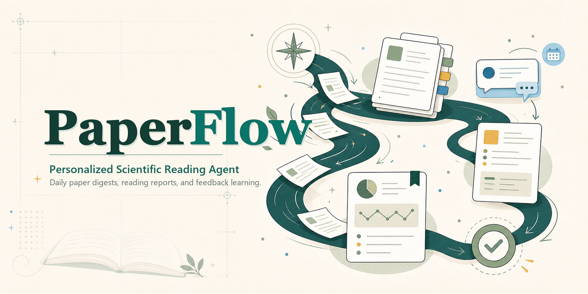

个性化论文推荐与精读
仪表盘
就绪
CLI
Local GUI
Feishu/Lark
Personalized Scientific Reading Agent
PaperFlow 本地研究工作台
每日推荐、精读报告、反馈学习、本地知识库。
选择下一步
当前画像会同步影响推送、精读和知识库检索。

最新推送
-
知识节点
-
待精读
0
每日推送
运行后自动更新个性化论文列表，一次完成多选反馈与精读。
arXiv
正在加载类别。
会议
正在加载会议。
期刊
正在加载期刊。
请先运行每日推送，或加载最近一次推送。
精读 arXiv 论文
粘贴 arXiv ID 或链接，生成本地 Markdown 精读报告。
精读本地 PDF
填写已有 PDF 路径，报告会保存到当前配置的精读目录。
报告阅读
在 GUI 中浏览和阅读本地 Markdown 精读报告。
尚未加载报告列表。
选择一篇报告
本地知识库
检索由推送、反馈、精读报告和画像漂移生成的私有知识库。
暂无检索结果。
询问知识库
基于本地片段回答问题。Mock 提供商也可用于烟测。
暂无回答。
必读规则
用于强约束推荐的作者、机构和窄关键词。
尚未加载必读规则。
编辑规则
宽泛兴趣应放在画像里；必读规则适合具体作者、机构或短语。
角色管理
管理角色元数据，并切换当前研究上下文。
尚未加载角色。
创建角色
创建角色时会同步创建对应用户画像，例如 user_rolea。
反馈历史
筛选选择、跳过、精读报告和画像更新记录。
尚未加载历史记录。
创建或更新画像
从自我描述、Scholar 页面、主页或本地 PDF 冷启动。
画像快照
核心方向、主题权重、必读规则和漂移状态。
尚未加载画像。
运行设置
与 .env 同步，保存后会立即更新当前 GUI 进程的环境变量。
尚未加载设置。
尚未加载 .env 设置。
尚未运行提供商测试。